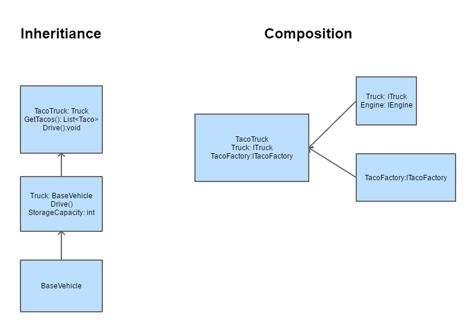
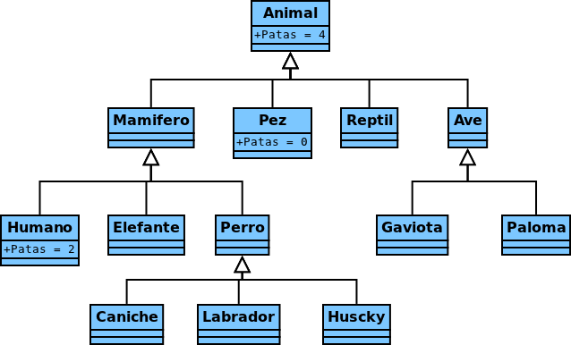

L’herència permet a una classe nova crear-se a partir d’una classe existent. La nova classe (subclasse) “hereta” els atributs i mètodes de la classe primària, i a més a més, té la possibilitat d’incorporar nous atributs i mètodes específics a la subclasse.
Conceptes:
Herència simple
Java permet l’herència simple: qualsevol classe només té una classe pare, no permet l’herència múltiple com sí permeten altres llenguatges de programació com el C++. Això ens planteja el problema que a vegades pels requisits de la nostra aplicació és necessari simular l’herència múltiple fent ús d’interfícies. Per a més informació: problema del diamant
L’herència és una relació d’extensió d’una classe més específica respecte una classe genèrica, això ens porta a que la classe filla ÉS UNA classe pare, però amb les funcionalitats ampliades/exteses/modificades. A vegades quan es programa existeix el dubte de confondre aquesta relació amb una relació de composició CONTÉ UN, que erròniament entenguem com a subclasse “una part” de la classe principal. Un exemple seria el següent:

Com podeu veure en l’exemple anterior en l’herència es parteix d’un BaseVehicle, que a la vegada s’especialitza en un Truck, i a la vegada s’especialitza en un TacoTruck. TacoTruck “ÉS UN” BaseVehicle, TacoTruck és una extensió de BaseVehicle. En canvi Truck “CONTÉ UN” engine, engine és una part de Truck, no podria substituir l’engine per un truck i que es comporti de la mateixa manera.
Una vegada es conceptualitza el problema a resoldre pots crear el teu arbre jeràrquic. Un exemple amb animals seria:

Per tal d’indicar que una classe és una herència utilitzarem la paraula extends en la definició de la classe. Per exemple si tenim una classe pare Persona i dos classes filles Alumne i Professor, ho faríem de la següent manera:
public class Persona{
...
}
public class Alumne extends Persona {
...
}
public class Professor extends Persona{
...
}
Si la superclasse no està al mateix package que la subclasse, s’ha d’importar la classe ja que sinó no en tindria visibilitat.
java.lang.Object
Una subclasse pot ser a la vegada superclasse d’altres classes i crear així un àrbre jeràrquic de classes. En Java totes les classes hereten d’una classe mare, la classe arrel de totes és java.lang.Object. Hi ha un conjunt de mètodes que tenen TOTES les classes de Java, inclús les que programeu vosaltres, aquí teniu la descripció de Java Oracle referent a la classe Object.
Fixeu-vos que com que per defecte s’hereda de la classe Object, és el mateix posar en la definició de la classe extends Object que no posar-ho.
Totes les classes per defecte extenen de java.lang.Object, per tant poden fer ús dels mètodes que conté aquesta classe, per exemple:
Utilitzem equals per comparar el valor de dos Strings. Molt sovint al principi es comet l’error de comparar dos Strings utilitzant “==”, cal diferenciar els tipus de dades primitius dels que no ho són, pels tipus de dades primitius Java té sobrecarregat sobre l’operador relacional “==” com cal actuar per comparar dos valors del mateix tipus, però en el cas del String no existeix la implementació de l’operador d’igualtat per “==”, per això utilitzem equals. De fet, si utilitzem “==” dos Strings estem comparant que la direcció de memòria on estan ubicats els dos Strings és la mateixa, que els dos OBJECTES comparteixen la mateixa direcció de memòria, i per tant, són, de fet, el mateix objecte.
De fet, podria generar dubtes la definició anterior, ja que si proveu el següent codi, d’acord amb el que acabem d’explicar, valor1 == valor2 hauria de ser False ja que parlem de referències a objectes diferents. El resultat és True perquè la classe String reserva en un pool de valors aquells Strings recents usats com a interned. Els Strings són objectes immutables, això vol dir que una vegada definits els valors no es poden modificar, quan a una referència de String li canviem el valor el que estem fent realment és crear un nou objecte String i reapuntar la variable al nou valor. Per això quan en el següent exemple s’observa True entre els valors1 i valors2 el que realment passa és que es comparen les direccions de memòria de valors1 i valors2 i com que els dos apunten a la mateixa direcció on es troba l’String “Hola” dins el pool, tant valor1 com valor2 apunten a la mateixa direcció del pool de Strings. Si en algun moment “modifiquem” el valor de valor1 o valor2 el que estem fent realment és crear un nou String reapuntant la direcció de memòria. Exemple:
String valor1 = "Hola";
String valor2 = "Hola";
String valor3 = valor1;
//True ja que es tracta de dos Strings recentment guardats dins el pool de Strings.
System.out.println(valor1 == valor2);
//True ja que estem comparant, mitjançant equals el valor de dos Strings.
System.out.println(valor1.equals(valor2));
//True ja que les dues variables valor1 i valor3, apunten AL MATEIX OBJECTE
System.out.println(valor1 == valor3);
En canvi per veure el comportament teòric:
String valor1 = new String("Hola");
String valor2 = new String("Hola");
//False ja que fa referència a dos objectes diferents i els Strings no s'han situat en el pool.
System.out.println(valor1 == valor2);
Per aprofundir amb la gestió del pool de Strings de Java podem observar el següent exemple que permet veure’n la diferència, ja que l’assignació del valor a string3 ve precedit de l’accés a una funció i per tant s’executa dins el RunTime (no en temps de compilació), no es considera eficient afegir l’String string3 al pool de Strings i per això el resultat de la comparació és False, després sí que l’afegim explícitament i per això el resultat és True:
public class Main {
private String string1 = "Hola";
public static void main(String[] args) {
new Main().manipulacio();
System.exit(0);
}
public void manipulacio() {
String string2 ="Hola";
System.out.println("[statics] s2 == s1? " + (string2 == string1));
String string3 = "Hol" + retornaA();
System.out.println("[before interning] s3 == s1? " + (string3 == string1));
string3 = string3.intern();
System.out.println("[after interning] s3 == s1? " + (string3 == string1));
}
private String retornaA() {
return "a";
}
}
S’observa com la classe filla adquireix noves propietats i les funcions constructora, get i set es modifiquen d’acord a aquestes noves propietats.
public class Habitatge{
private String direccio;
private int extensio;
private int codiPostal;
public Habitatge(String direccio, int extensio, int codiPostal){
this.direccio = direccio;
this.extensio = extensio;
this.codiPostal = codiPostal;
}
public String getDireccio (){
return direccio;
}
public void setDireccio (String direccio){
this.direccio = direccio;
}
}
public class Pis extends Habitatge {
private int planta;
private int porta;
public Pis(String direccio, int extensio, int codiPostal, int planta, int porta){
super (direccio, extensio, codiPostal);
this.planta = planta;
this.porta = porta;
}
@Override
public String getDireccio (){
return super.getDireccio() + " " + planta +" "+ porta;
}
@Override
public void setDireccio (String direccio, planta, porta){
super.setDireccio(direccio)
this.planta = planta;
this.porta = porta;
}
}